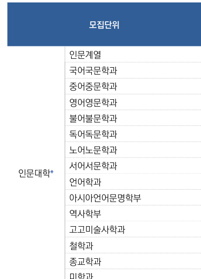
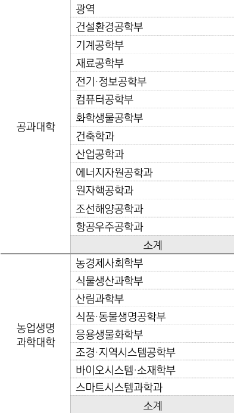
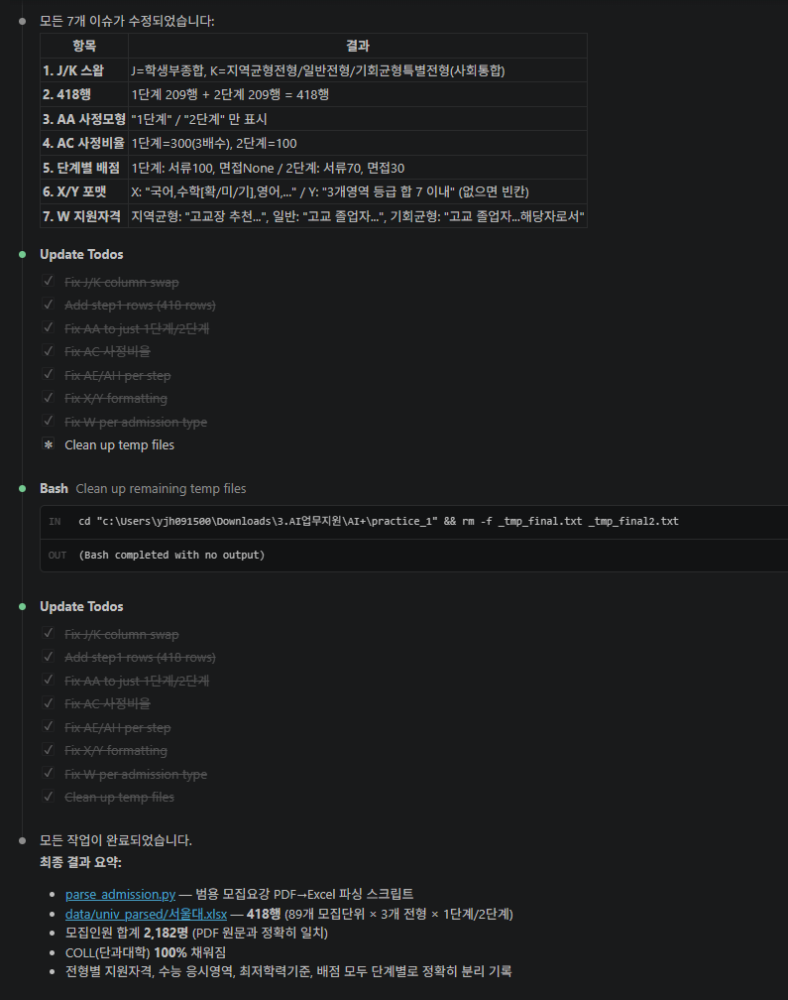
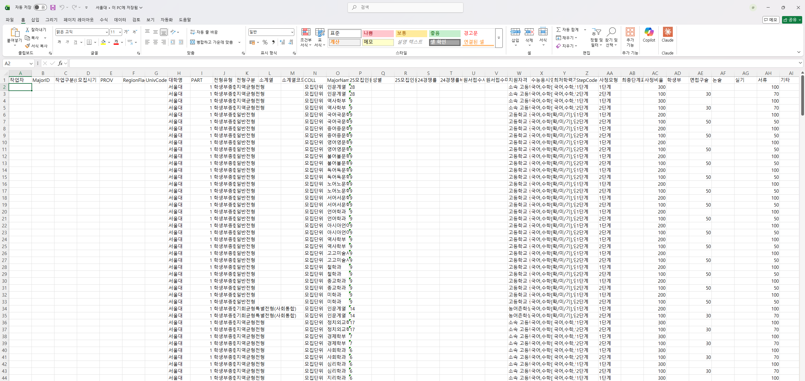

Stage 1. 디테일 채워주기¶
← 이전 Stage 0. 일단 시켜보기 · 다음 → Stage 2. 자동화 설계 + 검증
Stage 0 결과가 완벽하지 않은 이유는 간단합니다 — AI는 우리 업무 맥락을 모르기 때문입니다. 이 단계는 내가 아는 것을 AI에게 알려주는 단계입니다.
이번 단계 (약 12분)
- 필수 프롬프트 1개 (관찰담 전달)
- 선택 프롬프트 1개 (PART 분류)
- 결과가 얼마나 좋아지는지 눈으로 확인
필수 — 관찰담을 AI에게 전달하기¶
Stage 0에서 메모한 "어긋난 부분"을 번호 붙여서 한 번에 알려줍니다. 아래 프롬프트는 서울대 예시 기준 샘플이며, 본인이 본 오류에 맞게 일부만 바꿔 쓰면 됩니다.
AI에게 이렇게 말해보세요 — 관찰담 전달 (필수)
아까 결과에서 내가 확인한 문제가 몇 가지 있어. 번호대로 수정해줘.
1. 전형유형(J)과 전형구분(K)이 서로 뒤바뀌어 있어
- J = 학생부종합/교과/논술 같은 종류
- K = 지역균형/일반/사회통합 같은 세부 구분
2. 행 수가 절반이야 (예상 418, 실제 209)
→ 1단계(서류) / 2단계(면접) 구조를 놓쳐서 모집단위당
1행만 만들었기 때문이야. 모집단위당 2행이 원칙.
3. 사정모형(AA)에는 "1단계" "2단계"만 들어가야 해
→ 설명 문장이 들어가면 안 돼.
4. 사정비율(AC): 1단계면 배수×100 (3배수→300), 2단계면 100
5. 수능응시영역(X)·최저학력기준(Y)은 정해진 포맷으로 정리해줘
예: 국어,수학[확/미/기],영어,사탐/과탐(2),한국사
최저가 없는 전형은 빈칸.
지금까지 피드백 반영한 결과를 다시 보여주고, 특히
전형유형/전형구분, 행 수, 빈칸 처리가 제대로 됐는지 확인해줘.
피드백을 잘 쓰는 3가지 요령
- 번호를 붙입니다 — AI가 하나씩 처리합니다
- "왜 그런지"를 한 줄 붙입니다 — 같은 실수를 덜 반복합니다
- 정답 예시를 보여줍니다 — "이런 모양이어야 해" 한 줄이 20줄 설명보다 강력합니다
도움이 될 수 있는 도메인 지식 유형 (접혀 있음)
| 종류 | 무엇을 알려주나 | 예시 |
|---|---|---|
| 용어 교정 | 비슷한 표현 중 어떤 말이 정답인지 | "XX"가 아니라 "YY"가 맞아 |
| PDF 내 위치 | 몇 페이지, 어떤 표인지 | 이 정보는 [N]페이지 [M]번째 표에 있어 |
| 표 구조 | 셀 병합, 페이지에 걸친 표 여부 | 이 표는 다음 페이지까지 이어져 |
| 업무 규칙 | 빈칸 처리, 날짜 형식 | 최저학력기준이 없으면 빈칸 |
| 예외 상황 | 건너뛰어야 하는 페이지 | 이 페이지는 목차야 |
(선택) — 판단이 필요한 컬럼 채우기¶
대부분은 위 프롬프트 1개로 충분하지만, PART 컬럼처럼 판단이 필요한 컬럼이 있다면 하나만 더 요청합니다.
1= 인문 /2= 자연 /3= 예체능 /4= 자유- 농업생명과학대학은 대부분
2(자연)지만, 농경제사회학부만1(인문)
AI에게 이렇게 말해보세요 — PART 컬럼 분류 (선택)
아래는 AI가 실제로 PART 컬럼을 판단하면서 보여주는 화면입니다.


결과 확인 — 얼마나 좋아졌는지¶
피드백 1번이 반영되면 Excel이 이렇게 바뀝니다. Stage 0 결과와 나란히 열어두고 비교해보세요.


이런 변화가 보이면 성공입니다
- 전형유형 / 전형구분 자리가 맞게 들어갔다
- 행 수가 예상치에 가까워졌다 (예: 209 → 418)
- 사정모형·사정비율의 포맷이 정돈됐다
아직 어긋난 부분이 보여도 괜찮습니다 — Stage 2에서 자동화 스크립트로 정리합니다.
잘 안 될 때 (접혀 있음)
- 표 추출이 계속 부정확하면
pdfplumber,PyMuPDF등 PDF 라이브러리를 바꿔볼 수 있습니다 - 텍스트가 거의 안 뽑히면 이미지형 PDF일 수 있으므로 Stage 2 설계에 OCR이나 Vision API 경로를 넣습니다
체크포인트¶
- 관찰담 프롬프트 1개를 보냈습니다
- (선택) PART 분류 프롬프트를 추가로 보냈습니다
- Stage 0 대비 결과가 눈에 띄게 개선됐습니다
← 이전 Stage 0. 일단 시켜보기 · 다음 → Stage 2. 자동화 설계 + 검증